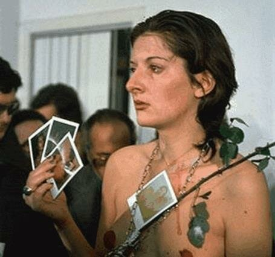

Rhythm 0 - Marina Abramović
Thèmes : Harcèlement, Vulnérabilité, Pouvoir
"Rhythm 0" est une performance artistique de 1974 où Marina Abramović a permis au public d'utiliser 72 objets sur elle pendant 6 heures. Cette œuvre explore les limites de la vulnérabilité et la nature de la violence.
Questions de réflexion :
- Comment réagiriez-vous si vous étiez à la place de l'artiste ?
- Qu'est-ce que cette performance nous apprend sur la nature humaine ?

The problem we all live with - Norman Rockwell
Thème : Racisme, classe social
"the problem we all live with" met en avant une jeune fille afro-américaine se rendant à l'école sous escorte fédérale, illustrant la manière dont les enfants peuvent être infantilisés et protégés dans des contextes de lutte pour les droits civiques.